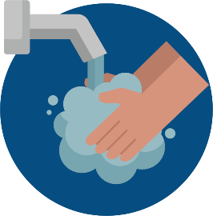
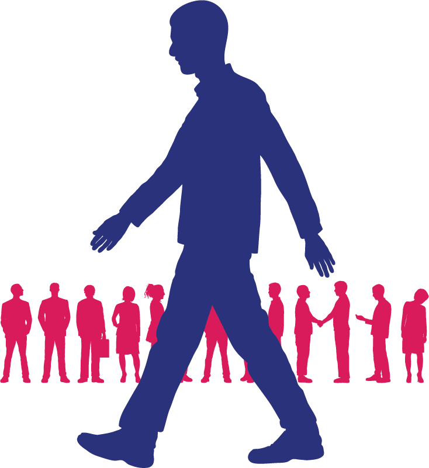
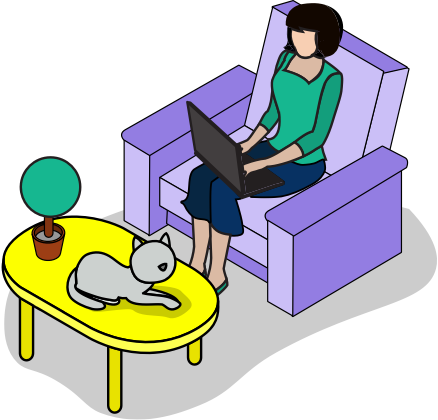

EDU-COVID adalah web yang memberikan informasi seputar Virus COVID-19. Ada kuis yang akan menilai anda tentang pengetahuan COVID-19.
Pencegahan COVID-19
Virus corona penyebab COVID-19 dapat menyebar dengan cepat melalui droplets atau tetesan air liur atau cairan hidung dari orang lain.Inilah sebabnya kita wajib memakai masker, terutama saat keluar rumah dan bertemu orang lain.

Penyakit saluran pernapasan seperti COVID-19 yang disebabkan corona virus menyebar ketika percikan dahak yang mengandung virus masuk ke dalam tubuh melalui mata, hidung, atau tenggorokan. Akan tetapi, yang paling sering terjadi adalah melalui tangan. Penyebaran virus dari satu orang ke orang lain paling sering terjadi melalui tangan.
Menjaga jarak adalah salah satu cara agar terhindar dari virus Corona. Menjaga jarak atau social distancing berarti tidak terlalu dekat dengan orang lain yang bukan berasal dari satu rumah

Hal yang semakin membahayakan adalah bahwa orang yang membawa virus ini tidak bisa dilihat atau diketahui tandanya secara fisik, teman-teman, terlebih kalau orang itu tidak memiliki gejala.Dalam kerumunan orang yang berada di sekitar kita, bisa saja ada orang yang sebenarnya membawa virus corona atau terinfeksi, tapi tidak memiliki gejala, atau yang sering disebut OTG (Orang Tanpa Gejala).

1% pengurangan mobilitas masyarakat menggunakan transportasi umum baik di terminal bus, stasiun kereta atau bandara, akan mengurangi 33 kasus dan empat kematian mingguan. Jika ada pengurangan kunjungan masyarakat ke retail (pusat perbelanjaan) maupun tempat rekreasi sebesar 1%, dapat mengurangi 25 kasus dan tiga kematian mingguan.
Data dan Statistik
Kuis
1) apa gejala covid - 19?
a) demam
b) sesak napas
c) batuk
d) semua jawaban benar
2) Bagaimana cara Covid -19 menyebar?
a) Orang dapat tertular COVID-19 dari orang lain yang terinfeksi virus
b) berkumpul dengan teman-teman
c) semua jawaban benar
d) main rental playstation
3) Apa yang dapat saya lakukan untuk melindungi diri saya dan mencegah penyebaran penyakit ini?
a) Seringlah mencuci tangan Anda dengan air bersih mengalir dan sabun, atau cairan antiseptik berbahan dasar alkohol
b) Semua jawaban benar
c) Hindari pergi ke tempat-tempat ramair
d) Jaga jarak setidaknya 1 meter dengan orang lain
4) Apa yang sebaiknya saya lakukan jika saya tidak memiliki gejala namun saya merasa terpajan COVID-19? Apakah perlu melakukan karantina mandiri?
a) Sediakan kamar sendiri yang besar dengan sirkulasi udara yang baik dan dilengkapi sarana mencuci tangan dan toilet.
b) Jika tidak memungkinkan, pisahkan tempat tidur dengan orang lain dengan jarak minimal 1 meter.
c) Tetap jaga jarak minimal 1 meter dengan orang lain, termasuk anggota keluarga. • Pantau gejala yang dialami setiap hari.
d) Semua jawaban benar
5) Bagaimana cara menggunakan masker yang benar?
a) Semua jawaban benar
b) Tentukan sisi mana yang merupakan sisi atas (tempat pita logam berada)
c) Ambil masker dan periksa apakah ada sobekan atau lubang
d) Sebelum menyentuh masker, cuci tangan menggunakan sabun dan air bersih mengalir, atau bersihkan tangan menggunakan cairan antiseptik berbahan dasar alkohol.